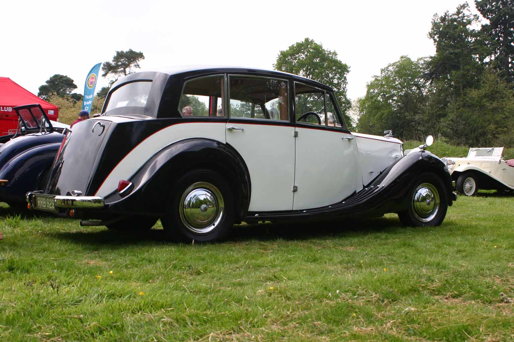

<link href="{{ site.baseurl }}/events/article.css" rel="stylesheet" type="text/css">
<main>
    <article>
        <ol id="breadcrumb">
            <li>
                <a href="{{ site.baseurl }}/">Home</a>
            </li>
            <li>
                <a href="{{ site.baseurl }}/events">Events</a>
            </li>
            <li>
                <a href="{{ site.baseurl }}/events/local">Local</a>
            </li>
            <li>Wroxall Abbey Triumph Day 2019</li>
        </ol>
        <div id="content">
            <h1>Wroxall Abbey Triumph Day</h1>
            <h2>Sunday 19<sup>th</sup> May 2019</h2>
            <p>A fairly gentle start and favourable weather forecast were the ingredients on Sunday 19<sup>th</sup> May, with the promise of a hog roast and everything Triumph, a mouth-watering prospect indeed.</p>
            <p>The journey with John Castle and his family was great and a timely arrival was achieved.</p>
            <p>We were greeted by Martin, who was organising and a martial for the event, making sure the different marques were positioned, and parked in the correct area. It was very kind of him to invite the Triumph Mayflower Club and he did a superb job with arranging all the club stands and vehicles, to form rows and rows of everything Triumph.</p>
            <p>The task for the younger members was to look at all the cars on display and choose the one they wanted to drive home in with Dad. For the adults it was a tantalising look at what they liked and what the wallet could afford!</p>
            <p>The clubs with stands were The Pre 1940 Triumph Motor Club, which displayed the Vitesse, Dolomite, Gloria, all looking great in the dappled light. The Triumph Roadster Club were there with Tim warmly welcoming us to the show, he also had Dave’s Renown on the stand as there was space due to a couple of the Roadster vehicles not making it due to reliability issues. There was also The Standard Triumph Club who exhibited the Standard 8, 10 and 12 cars.</p>
            
            <p>A Standard Vanguard Estate was also there, which shares some components with the Mayflower.</p>
            <p>A massive swathe of Stags could be seen from the owners club and the TR Register were well represented.</p>
            
            <p>You could spot the TR2, 3, 4, 5, 6, 7, 8. Club Triumph had a Herald and Toledo and further along the row Triumph 2000, 2500 and a Spitfire were present.</p>
            
            <p>Initially the closest vehicle to a Mayflower in looks was the Renown.</p>
            
            <p>Mayflowers were due but in the days running up to the event each car developed different mechanical issues, but a pleasant surprise was when Tony arrived middle of the day with his two-tone Mayflower, only just recently getting it running right.</p>
            
            <p>The 1952 Triumph Renown Limousine was one of only 10 left in the world, originally 191 were built. The Limousine had a glass partition behind the driver separating the front and back of the car. Initially in 1939 the first Renown was made but due to the war, production did not restart until 1947-1949 and known as the Triumph 1800 town and country saloon. In 1951 the Renown Limousine was announced with a slightly longer wheel base and manufactured to these new measurements.</p>
            <p>Tony Gregory’s Mayflower, 634 YUG “Maggie”, made in late 1950 and registered on 16<sup>th</sup> January 1951 was on show at the event. A very pleasant sight in its two-tone livery. The car is an early MkI with subtle differences from later models and it has the deluxe specification of a heater, leather seats and carpets.</p>
            <p>The Renown and Mayflower looked great together. But the spectacle of everything Triumph for as far as the eye could see was the real winner, and thanks must be given to everyone who helped to organise the event.</p>
            <p>John Banks</p>
            <p>Rally Secretary</p>
            
            
        </div>
    </article>
    <aside>
        <h2>Members’ cars in attendance</h2>
        <ul class="disableListStyles">
            <li>
                <h3>Tony Gregory</h3>
                <div>
                    <div class="numberPlateMarker">634 YUG</div>
                </div>
            </li>
        </ul>
    </aside>
</main>
